Leading Up To Season
It's now September of 2022, youth season opens in exactly 10 days so we are getting prepared. We have zeroed in on a piece of Goosepond called BeeHunter Bottoms, this specific area I call Treeline. We've sat a trailcam on a hot trail and have already gotten pictures of a mature doe and a young 8 point buck. Below are some of the pictures:
Google maps link to Treeline
Driving home from our main spot we noticed a nice trail around baseline road, checked it, added a camera and have already caught several deer including a giant old doe, and a nice 6 point buck, I call this place Oak Grove.
Google maps link to Oak Grove
Trail-cam Photos
Here are some of the best trailcam photos I have gotten so far. We have also gotten a bobcat, coyote, a fox, raccoons and a flock of turkeys.
Treeline Photos
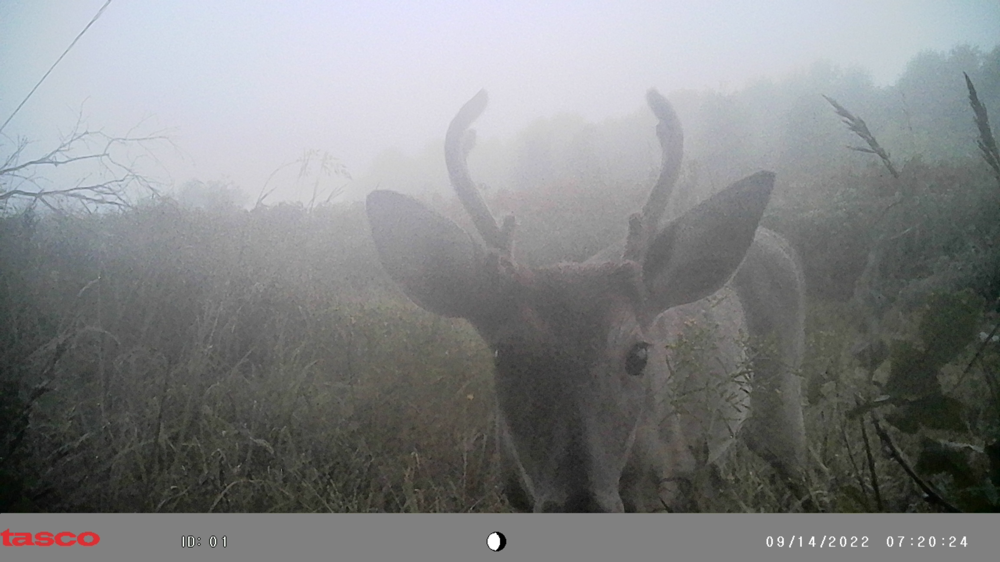
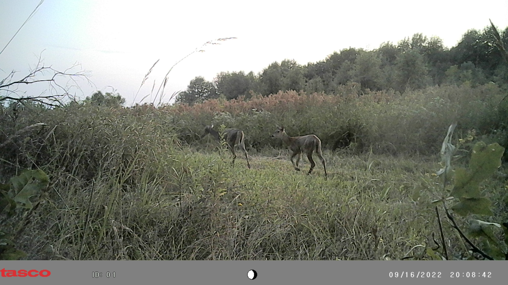
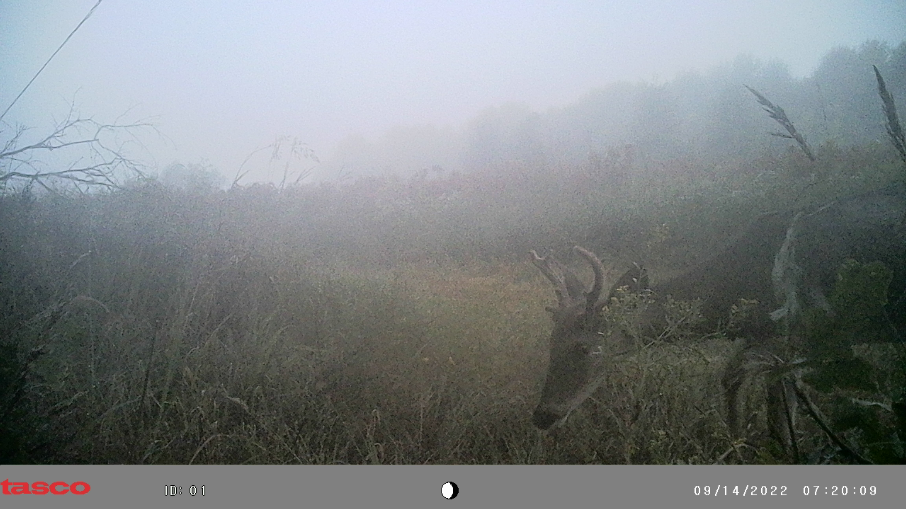
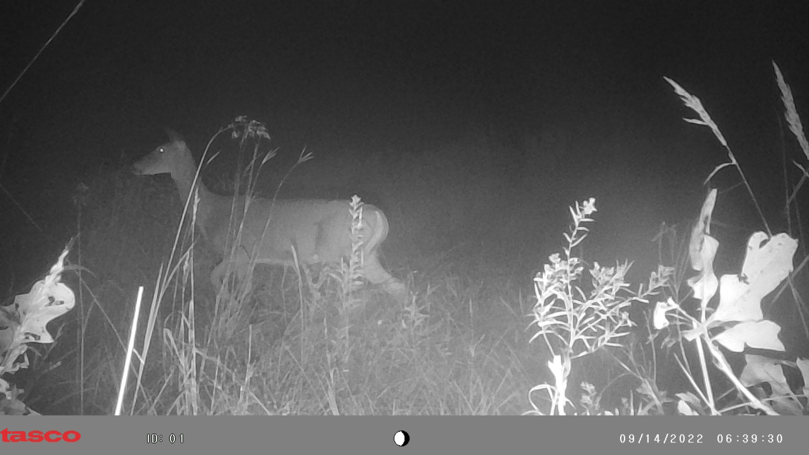
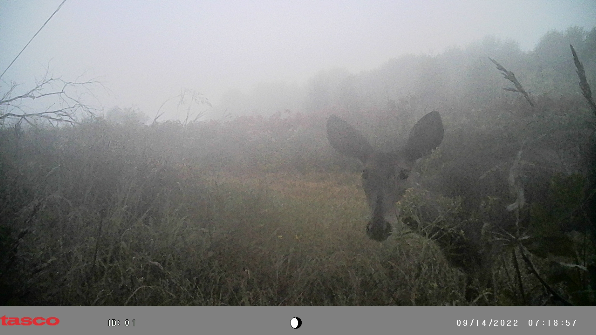
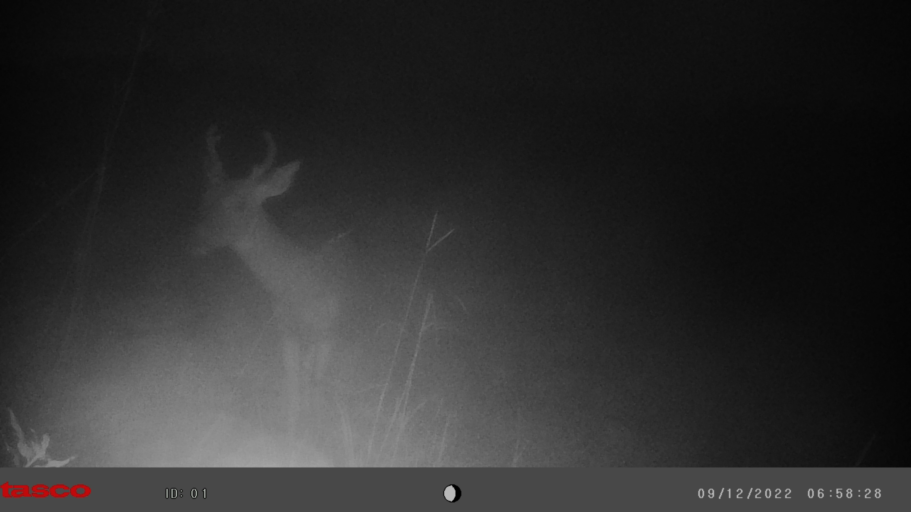
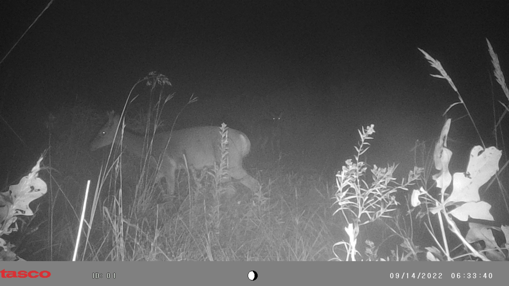
Oak Grove Photos
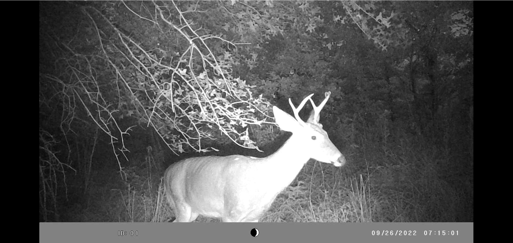
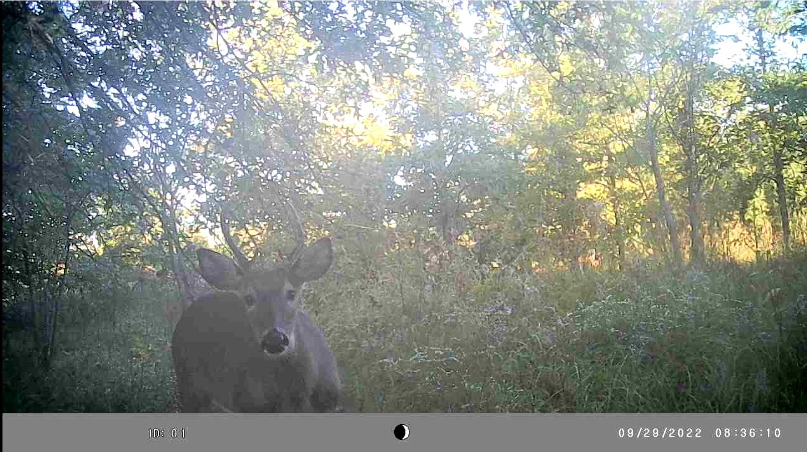
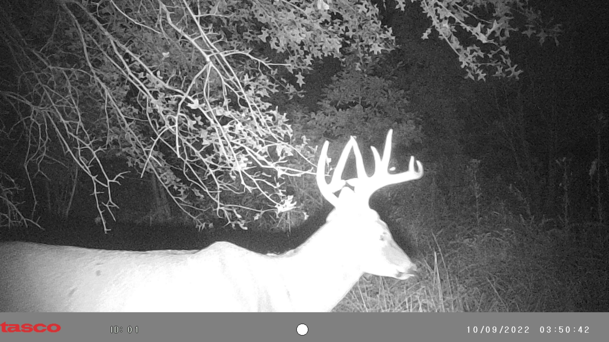
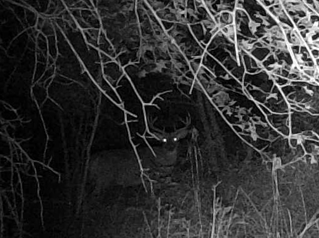
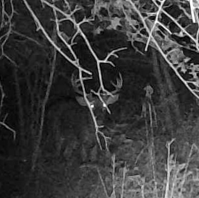
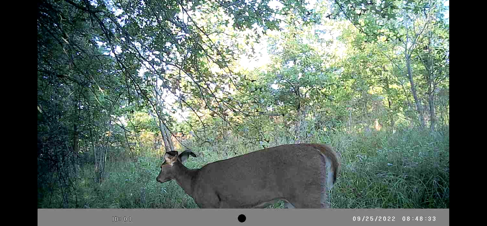
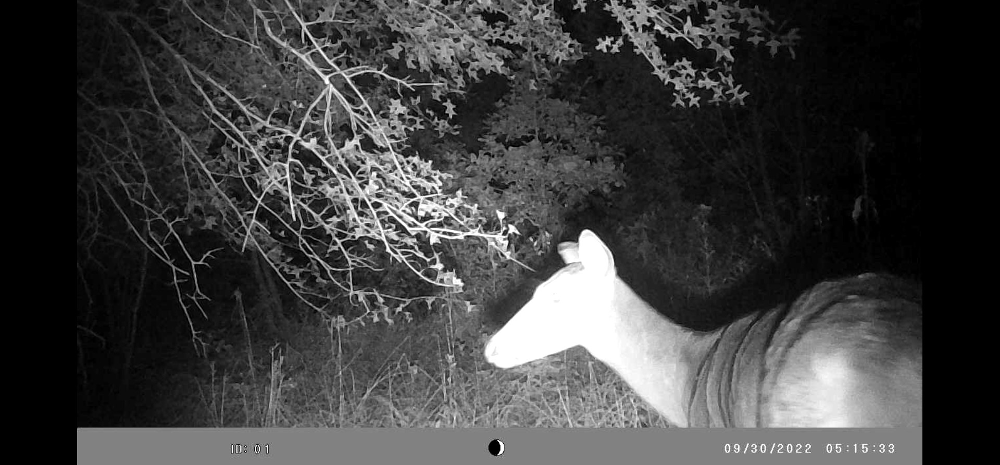
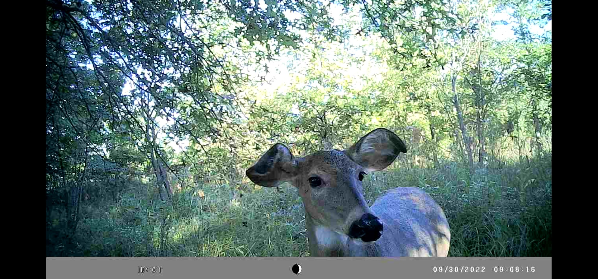
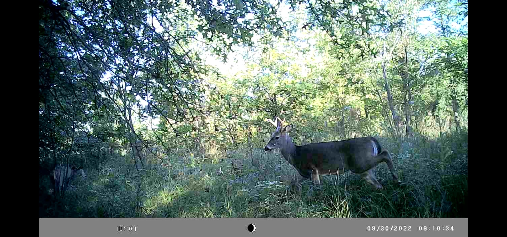
Target Practice
We have now gotten a scope for our crossbow, with youth season opening up in 9 days we are going to take it out tonight for some target practice. Here is how we shot, going from 20 to 50 yards.
- 20 yards: Uhh pretty crap... arrows kept hitting the ground a ricocheting into the target (or out into the bean field) but luckily we found the sight for the muzzleloader, so we will use the muzzleloader for youth weekend and keep practicing with the crossbow.
- 30 yards: N/A technicaaaaa difffuculttttie
- 40 yards: N/A ur trash kid lol
- 50 yards: N/A didn't get past 20 lol
Deer Season
Here is how each hunt from the 2022 season went, including youth season, archery, firearms and muzzleloader seasons.
Youth Season, September 24-25
Youth season has opened, and we are going to hunt atleast twice during the weekend long season using our trailcam footage as a guide; one or two does and a small buck usually pass by this trail around 7am, and we plan to ambush them.
(Update from 9/16/22) looks like a small cold front will be moving in on youth weekend with the highs being 74 and 75.
(Update from 9/23/22) After seeing even more trail camera footage, we have 2 young bucks, a small 8 point and a 4 point, and several does. They all move throughout sunrise and some does are even moving around in the evening around 7-8.
Youth Season Hunts
September 24th
- Treeline (BH3), morning of September 24th, 2022: Saw 2 deer; one as we pulled in and one while we were hunting, actually got a shot off at one but due to either a gun malfunction or aiming too high, I didn't hit or kill it.
- Oak Grove (BH5N), evening of September 24th, 2022: Didn't see anything but possibly heard a buck grunt, but the high was around 80 so that could've ruined deer movement.
September 25th
- Treeline (BH3), morning of September 25th, 2022: Our hunt was ruined due to a storm moving in around 6:30, we opted to head home and get more sleep than to get struck by lightning.
- Oak Grove (BH5N), evening of September 25th, 2022: Didn't lay eyes on any deer, but we heard a doe bleat, and heard a deer moving around in front of us, we just couldn't see it
Even though we didn't kill one, youth season was a success. We saw two, had non visual interactions, we know two great areas, and have two different nice bucks on camera + a giant old doe. Can't wait for archery season!
We were not able to hunt till sunset during youth season due to the processor closing at 7pm.
Archery Season, October 1st-January 1st
After not getting a deer in youth season, we are getting ready for archery season starting the 1st.
Target Practice Take 2
We decided to take the scope off of the crossbow, and get it sighted in with just old-fashioned iron sights. We took it out september 27th, and here's how we did:
- 10 yards: 1 shot, easy bullseye
- 20 yards: After a few shots and some sight adjustments I was getting bullseyes easy
- 30 yards: I was even getting bullseyes at 30 yards.
We did great with iron sights! I am more than ready for opening day of archery season.
Archery Season Hunts
October 1st, 2022
- Oak Grove, (BH5N), morning of October 1st, 2022: Didn't lay eyes on any deer, but did have one deer spook either because of us or something else; we heard it blow very near us, and run off blowing several times. After that the morning went quiet.
- Oak Grove, (BH5N), afternoon/evening of October 1st, 2022: Sat from about 2pm to 7:15 and didn't see or hear any deer.
On October 6th we added some blind material at Oak Grove to help conceal us when we're hunting.
October 7th, 2022
- Oak Grove, (BH5N), evening of October 7th, 2022: Got sat up around 4pm and sat till around 7. At roughly 5:10 we spotted a mature doe with a yearling doe behind us and to our left about 15 yards. When they came to the trail, they had to choose to turn left (which would take them away from us into an overgrown field) or to take the trail right (which was my shooting lane). They opted to go left into the field, still an amazing hunt though, we are getting so close to getting one.
Due to a heat wave and Dad's serious back injury putting up a trail camera, we weren't able to hunt till Oct. 7th.
October 9th, 2022
- Oak Grove, (BH5N), Afternoon - part of the evening of October 9th, 2022: Went out earlier, around 2pm to 6. Didn't see anything, did hear some possible footsteps but nothing definite. Could be due to a heat wave coming through.
Update: Due to getting several good deer including big bucks on camera at Oak Grove, and some idiot driving a car around Treeline every night, Oak Grove has become our main hunting area.
October 12th, 2022
- Oak Grove, (BH5N), Evening of October 12th, 2022: Sat up around 4:00pm till sunset. Didn't see anything, heard a couple sounds but nothing definite.
October 13th, 2022
- Treeline, (B53), Evening of October 13th, 2022: Got sat up as usual around 4:00 till sunset, didn't see anything, but super high winds, and several other hunters on our camera could be part of the problem. We're contemplating leaving Treeline for a while and focusing on Oak Grove, and possibly another spot.
October 15th, 2022
- Oak Grove, (BH5N), Morning of October 15th, 2022: Morning hunt, got out around 6:30 and hunted till around 10. Heard sounds but nothing definite, Dad said he saw some movement a little before sunrise but not sure if it was a deer or not. During our hunting time we had atleast 2 does on camera 100 yards away, we just weren't in the right spot.
October 17th, 2022
- Treeline, (BH3), First half of the morning of October 17th, 2022: Sat up around 6:30, saw a nice little buck cross the road in front of us about 150-200 yards away from our hunting place. Around 7:20 I caught movement but couldn't tell if it was a deer or not, after a few seconds a deer blew then jumped into the weeds and ran off. I thought I heard a couple more run off with it. We think they saw my crossbow, so we adjusted our spot a few feet to be more concealed.
- Oak Grove, (BH5N), Second half of the morning of October 17th, 2022: We waited about an hour after those deer spooked at Treeline and decided to try at Oak Grove, we tried a new spot but it wasn't concealed enough so we went back to the blind. Sat till about 10:00 and didn't see any deer, but did see our friend the massive squirrel.
Massive update from October 17th: We have secured permission to hunt at Poppy's Shop, around 27 acres of private land that includes a hay field. We are heading out on the 18th to scout around and hopefully put out a trail camera or two.
Google maps link to The Shop
October 18th, 2022
- The Shop, afternoon of October 18th, 2022: Went out to scout around the Shop, saw several trails leading into and around the hayfield, and even saw some rubs, one of which was fresh from this year. We are still waiting to get permission to put trail-cameras out.
October 19th, 2022
- Treeline, (BH3), Morning of October 19th, 2022: Same time, sat up around 6:30 and just like clockwork at 7:20 2 deer came in, one walked perfectly into my shooting lane and I gave it a "Baap" to stop it; ready to fire. but instead of stopping it just immediately trotted off, along with the 2nd deer. We are getting so close, just hoping it happens this year.
(October 20th) We took both cameras out of Oak grove and sat them up at The Shop, one over a fresh buck rub and one over the field in the corner, near the hidden pond.
October 21st, 2022
- Treeline, (BH3), Morning of October 21st, 2022: Sat up at the same time (6:30), and sat till around 8:30. The high was much higher than the last few days (42 degrees) and we saw no deer. It also could be due to the fact that we heard several dogs and coyotes going off all morning.
(October 26th) Dad recovered the cameras from The Shop, I wasn't able to help due to me having a stomach bug. We got a ton of good deer on camera, here are some of the highlights:
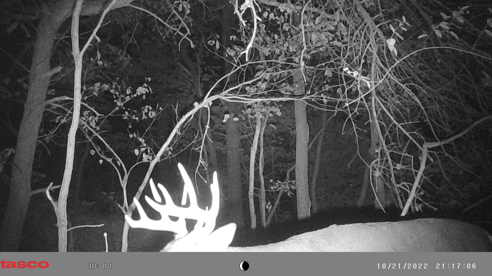
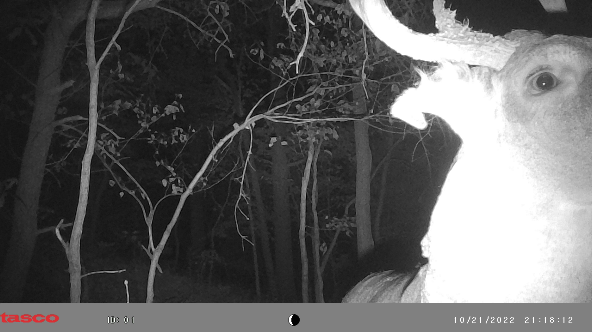
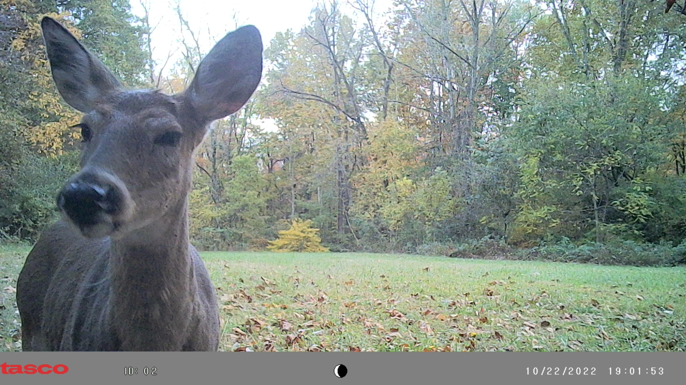
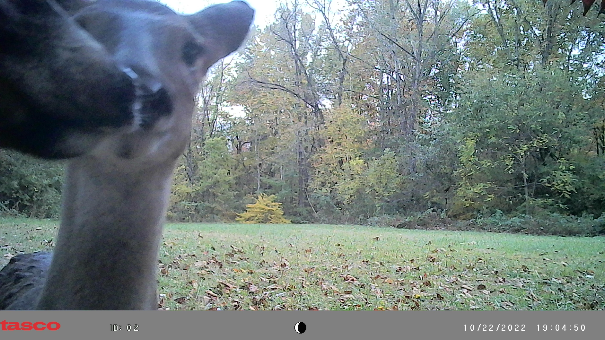
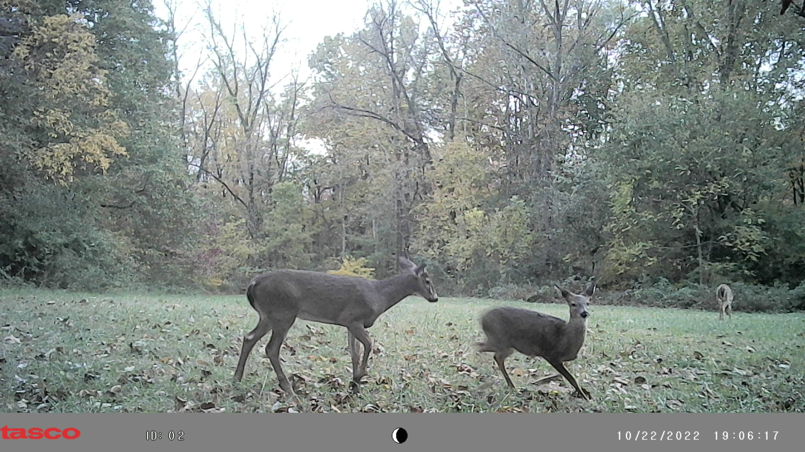
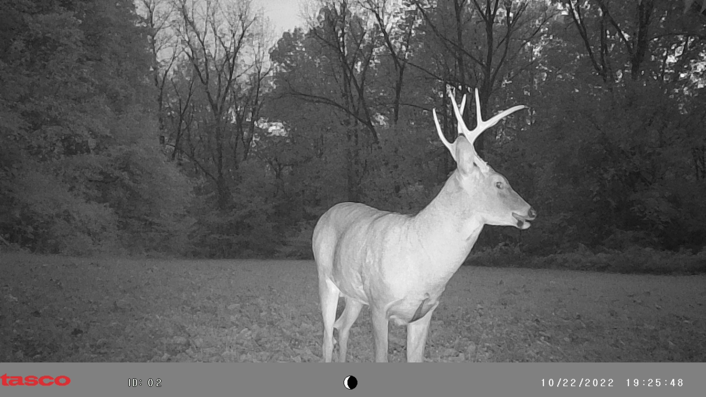
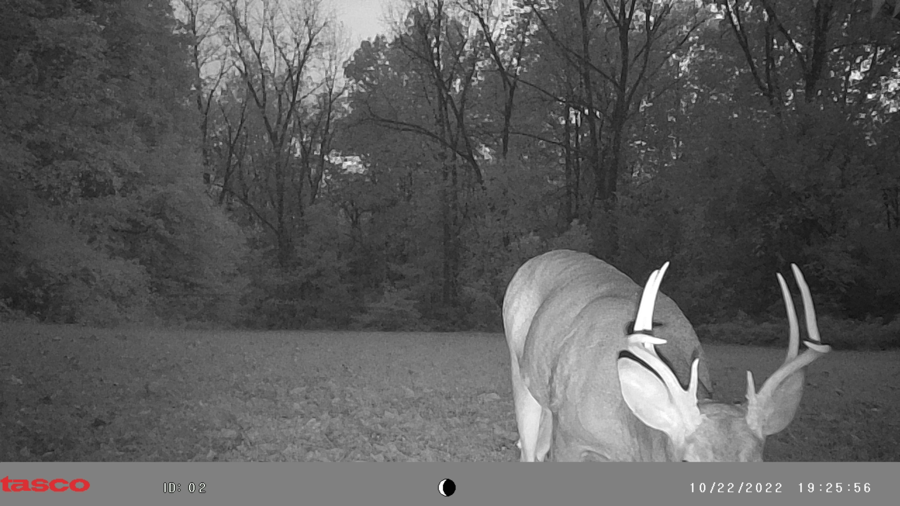
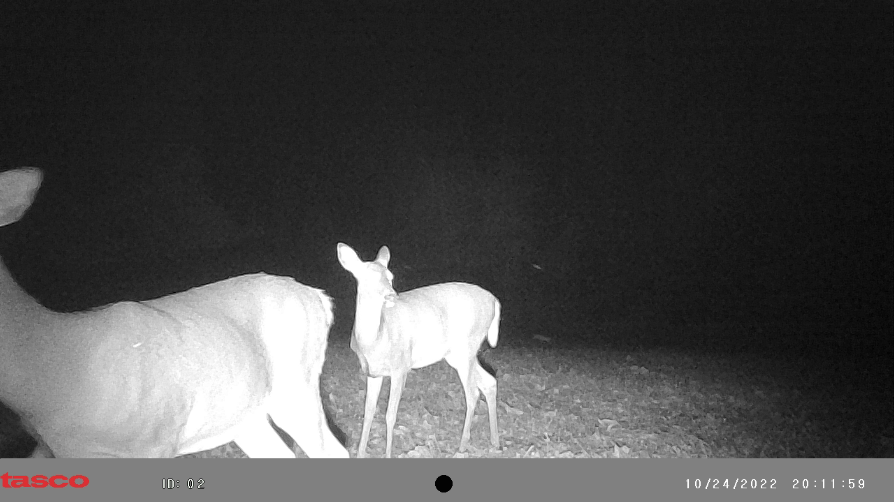
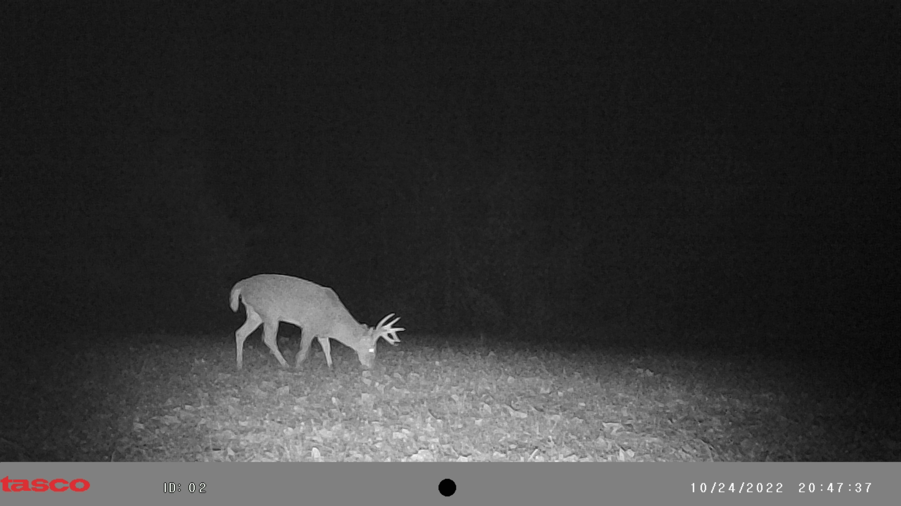
Bonus picture of a screaming deer:
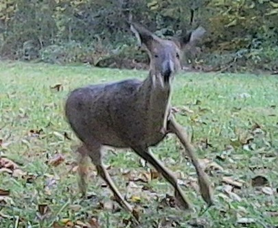